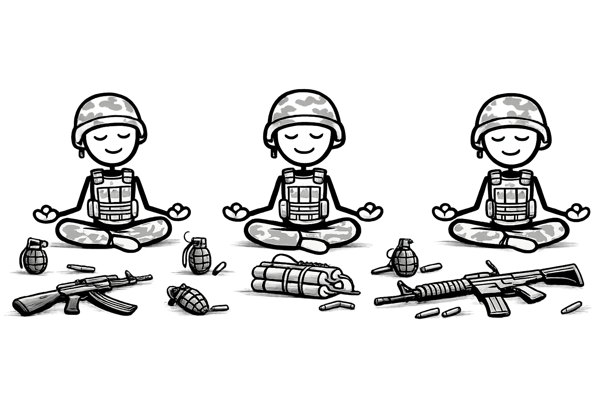
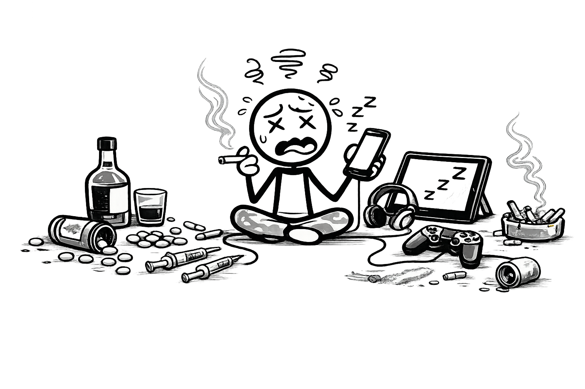
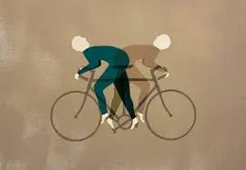

Happiness vs. Excitement?
It is very simple to be happy but very difficult to be simple. “What is called happiness is an abstract idea, composed of various ideas continue reading

Play Your Music
In the summer of 1992, principal cellist of the Sarajevo Opera Orchestra, Vedran Smailovic, sat in the city centre of Sarajevo and played his cello. . Continue reading

Addiction: A Prison of Pleasure
Addictions come in many forms, but they all share one thing in common—they promise immediate relief while quietly demanding a greater price. Continue reading
Don't Seek Goals, Seek Yourself
Before I delve into my usual musings, let me assign you your first homework for the year. Can you list your top five goals for 2024? There is a famous. Continue reading
The Common Denominator of Success
The birth of the Renaissance transformed the way knowledge was shared, and technological advancement made information instantly accessible. Yet one question remains: Continue reading

Birds of the Same Feather Flock to Walls
I would like to emphasize that most forms of discrimination only persist within systems that support them. Many people simply follow what is popular. Continue reading

10 Ironies of life
The overused maxim, "life is not black and white," reminds us that things are rarely as clear as they seem. Life’s deepest truths often hide in what we avoid.Continue reading
5 Relationship Lessons
Please don’t quote me on this, but I am sure there's a common belief that Romeo and Juliet is the most romantic book ever written, yet it ends in tragedy. Continue reading